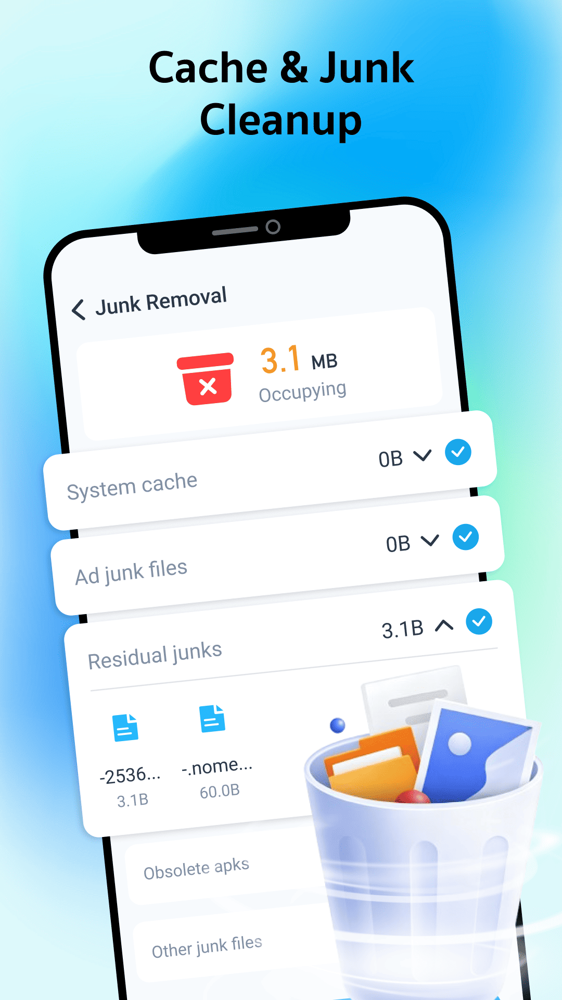
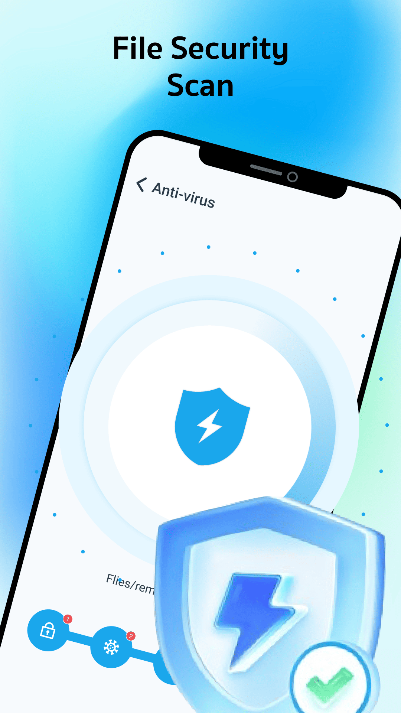
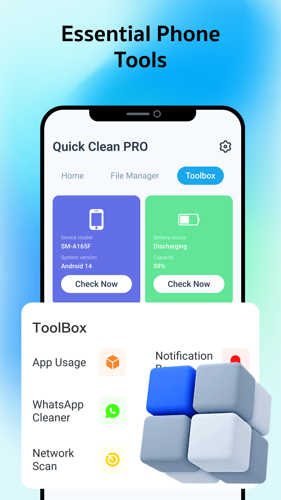
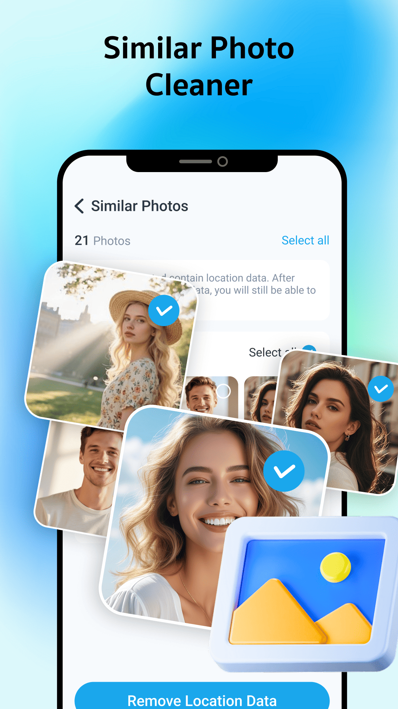
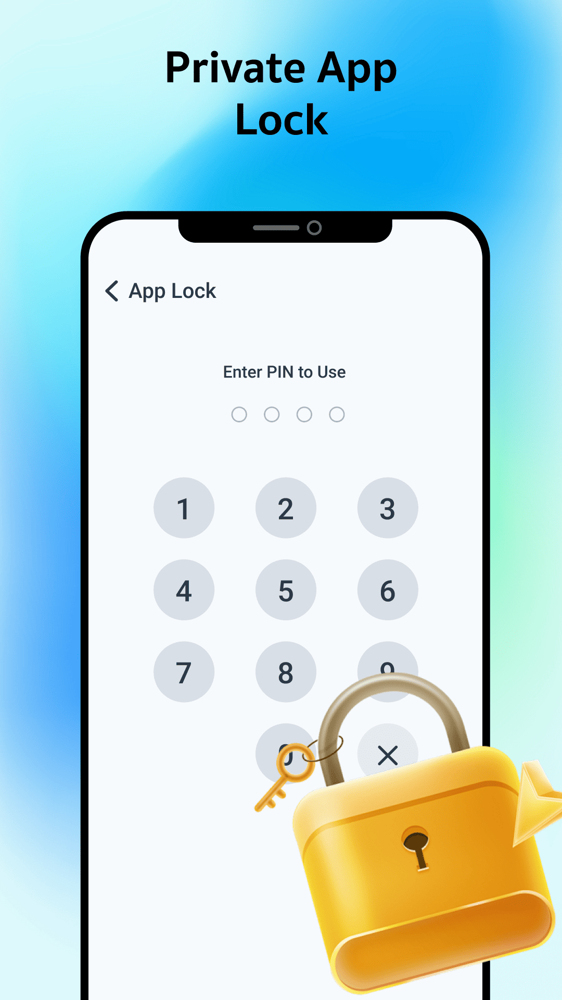

Snapshot
- Legal Name
- Foshan Fashion City Network Technology Co., Ltd.
- Account Type
- Organization
- Focus
- Data recovery · Digital lifestyle · Distribution infrastructure
Organizational developer account
Foshan Fashion City Network Technology Co., Ltd. operates from Foshan, Guangdong, delivering infrastructure-grade data recovery, content distribution, and privacy workflows for partners who need reliable consumer software on a global stage.
Product ecosystem
Our portfolio combines file recovery, storage cleanup, device diagnostics, and everyday privacy tools in lightweight mobile experiences.
Company DNA
We combine manufacturing-town pragmatism with product craftsmanship to ship recovery utilities, lifestyle apps, and infrastructure services across markets.
Headquartered in Nanhai District, we design software that safeguards personal memories and simplifies cross-market distribution. Our team pairs privacy-by-design reviews with rapid feature delivery so partners can trust every release.
Solutions
File fingerprinting, version rollback, and encrypted staging environments keep user memories safe.
Navigate regional stores with unified assets, localized messaging, and measurement.
APIs, SDKs, and white-label interfaces for OEMs and internet brands.
Credentials & Compliance
Our organizational account, operational maturity, and city-level innovation resources keep each delivery auditable.
Playbooks for release readiness, bilingual QA, and 24/7 escalation guarantee predictable launches.
Room 501, Building 1, Tianyou 3rd Rd., Guicheng Sub-district, Nanhai District, Foshan
Adjacent to the Greater Bay Area manufacturing belt for rapid supplier access.
Security scanning, privacy evaluation, and bilingual asset QA precede every launch.
App Ecosystem
Explore live product materials and utility-focused app experiences from Foshan Fashion City Network Technology Co., Ltd.
Recovery
Restore confidence for deleted memories with scan, preview, and guided media recovery workflows.
Cleanup & Privacy
Clean cache and junk files, review device health, scan files, find similar photos, and protect private apps from one utility dashboard.
Quick Clean PRO
Quick Clean PRO helps users keep phones organized with focused cleanup tools, file checks, similar photo review, and privacy controls for everyday apps.
Built for routine storage care and phone maintenance, Quick Clean PRO combines safe cleanup actions with clear review screens so users can understand what they are cleaning before they act.

Review system cache, ad junk files, residual files, obsolete APKs, and other removable items before cleanup.

Scan files and removable folders with a clear status flow designed for quick, understandable phone care.

Check device status, battery information, app usage, notifications, network scan tools, and more from one toolbox.

Find similar photos and review selected images before removing duplicates or redundant media.

Protect sensitive apps with a PIN-style lock flow that helps users add another layer of everyday privacy.
Contact
Room 501, 5F, Building 1, No.13 Tianyou 3rd Rd., Guicheng Sub-district, Nanhai District, Foshan
Postal code 528000 · China
connect@foshanfashioncity.cn
Weekdays 09:30–18:30 (UTC+8)
support@foshanfashioncity.cn
Quick Recover, Quick Clean PRO & companion products · 24/7 email coverage